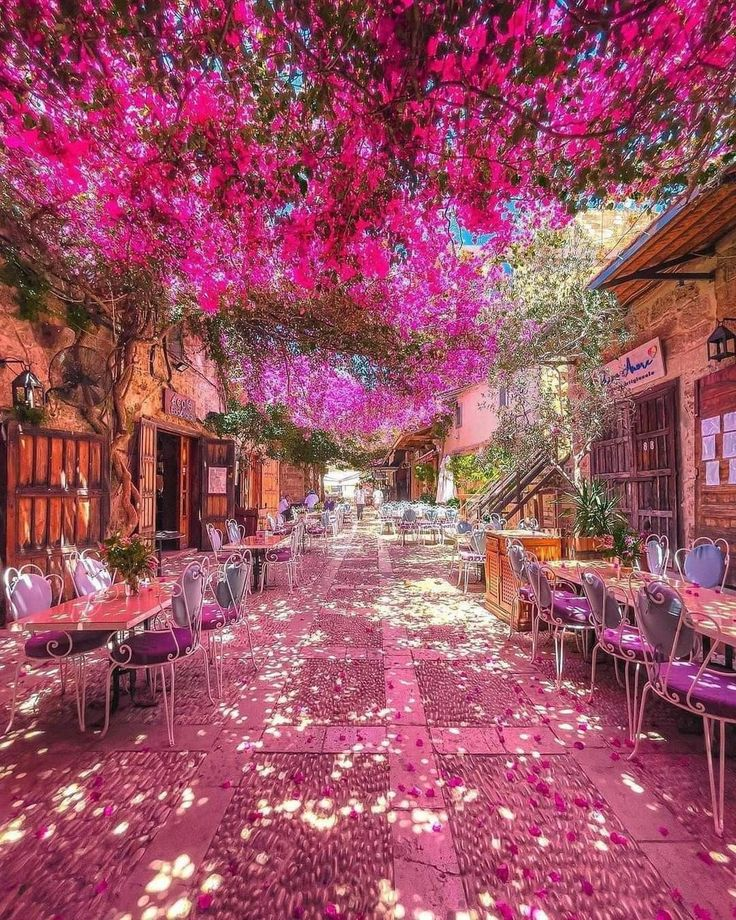

Baalbek, the "City of the Sun," is a mesmerizing ancient site nestled in Lebanon's Bekaa Valley. Home to the awe-inspiring Roman temples of Bacchus and Jupiter, it offers a stunning glimpse into a 2,000-year-old civilization. The grandeur of its towering columns and intricate carvings leaves visitors in awe.Read more
Content:
Places to visit in Lebanon

Sidon, an ancient port city along the Mediterranean coast, offers a captivating journey through time with its bustling souks and majestic Sea Castle. This historic gem has seen the rise and fall of empires, from the Phoenicians to the Crusaders. Wander through its vibrant streets and discover the layers of history in its architecture and artifacts.Read more
Faraya, nestled in the picturesque mountains of Lebanon, transforms into a winter wonderland for ski enthusiasts with its pristine slopes and cozy chalets. Beyond the snow, it offers breathtaking views, charming villages, and vibrant nightlife. Whether you're skiing, hiking, or simply relaxing, Faraya promises a magical escape.Read more
Jeita Grotto is a mesmerizing natural wonder in Lebanon, featuring stunning limestone caves filled with awe-inspiring stalactites and stalagmites. A boat ride through the lower grotto offers a magical journey through crystal-clear waters, revealing breathtaking formations. With its enchanting beauty and serene atmosphere.Read more
Zaituna Bay, located along Beirut's dazzling waterfront, is a bustling hub of luxury yachts, trendy restaurants, and chic boutiques. Stroll along the marina, savor exquisite cuisine with stunning sea views, and soak up the vibrant atmosphere. It's the perfect spot for an elegant and lively evening out.Read more

Byblos, one of the oldest cities in the world, offers a captivating blend of history, culture, and charm. Wander through its ancient ruins, vibrant souks, and picturesque harbor to uncover the stories of its Phoenician, Roman, and Crusader past. The city's quaint cafes and stunning seaside views make it a perfect destination for relaxation.Read more